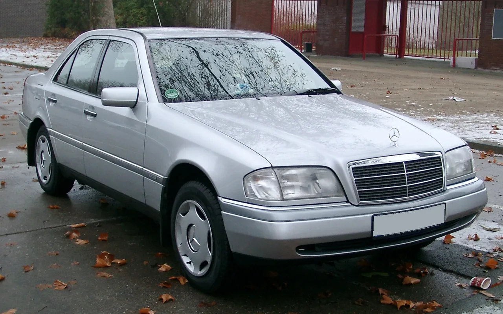

▲ 1990년대 W124 E클래스 — 이런 1986~2010년산 벤츠 승용차들이 이번 '출생증명서' 발급 서비스의 대상이다
오래된 차를 타는 사람이라면 한 번쯤 궁금해집니다. "이 차, 원래는 어떤 사양으로 나왔을까?" 메르세데스-벤츠가 이 질문에 공식적으로 답해주는 서비스를 새로 내놨습니다. 이름하여 '출생증명서(Birth Certificate)'. 제조사가 보관해온 생산 당시 기록을 바탕으로, 차량의 원래 사양과 제조 정보를 고급 용지에 인쇄해 발급해주는 서비스입니다.
1. 어떤 차가 대상인가

▲ W140 S클래스 — E·S·SL·SLK·A·C·R클래스 등 1986~2010년산 대부분의 승용차 라인업이 발급 대상에 포함된다
대상은 1986년부터 2010년까지 생산된 벤츠 승용차입니다. E클래스, S클래스, SL, SLK, A클래스, C클래스, R클래스 등 이 기간에 나온 대부분의 승용 라인업이 포함됩니다. 다만 AMG 모델과 밴 차종, 스마트 브랜드 차량은 현재 서비스 대상에서 제외돼 있습니다. 향후 대상 범위가 확대될 가능성은 있지만, 현재로서는 순수 벤츠 승용차 라인업에 한정된 서비스입니다.
2. 신청 방법과 가격 — 130유로, 온라인으로
신청은 메르세데스-벤츠 클래식 스토어를 통해 온라인으로 진행합니다. 신청할 때는 차대번호(VIN)와 함께 소유를 증명할 수 있는 서류를 제출해야 합니다. 비용은 130유로, 우리 돈으로 약 21만 4천원이며 배송비는 별도입니다. 신청이 접수되면 통상 5영업일 이내에 발송되는 것으로 안내되고 있습니다.
3. 증명서에 담기는 정보들

▲ R129 SL — 출생증명서에는 이런 클래식 모델의 출고 당시 색상, 실내 사양, 선택 옵션까지 상세히 기록된다
출생증명서에는 단순히 "언제 만들어졌다" 수준을 넘어서는 정보가 담깁니다. 차대번호(VIN)는 물론, 브랜드·차종·차체 형태, 정확한 출고일, 엔진과 변속기 번호, 출고 당시의 외장 색상과 실내 사양, 그리고 최초 구매자가 선택한 옵션 목록까지 기록됩니다. 이는 단순한 기념품이 아니라, 지금 소유한 차량이 출고 당시 사양 그대로인지, 아니면 이후에 개조·수리 과정에서 바뀐 부분이 있는지를 확인할 수 있는 근거 자료로도 활용될 수 있습니다. 실제로 클래식카 시장에서는 이런 출고 당시 사양 증명 자료가 차량의 진품성과 가치를 평가하는 데 중요한 역할을 합니다.
4. 벤츠는 왜 이 서비스를 만들었나

▲ W202 C클래스 — 1990년대 벤츠 보급형 라인업도 이번 출생증명서 발급 대상에 포함된다
벤츠 측은 이 문서가 클래식 벤츠 오너들과 회사의 아카이브 정보를 공유하고, 차량의 과거와 현재를 연결하는 의미 있는 자료가 될 것으로 기대한다고 밝혔습니다. 동시에 이 출생증명서 자체가 하나의 수집 가치를 지닌 아이템이 될 것이라는 전망도 내놨습니다. 오래된 차를 타는 오너들에게는 애착을 더할 기념품이 되는 동시에, 벤츠 입장에서는 브랜드의 헤리티지와 아카이브 역량을 홍보하는 효과도 함께 노릴 수 있는 서비스인 셈입니다.
5. 국내 오너도 신청할 수 있을까
자동차를 단순한 이동 수단이 아니라 하나의 역사와 스토리로 대하는 클래식카 문화가 확산되는 가운데, 이런 '출생증명서' 서비스는 브랜드가 자사의 유산을 소비자와 함께 관리해나가는 새로운 방식을 보여준 사례로 볼 수 있습니다.